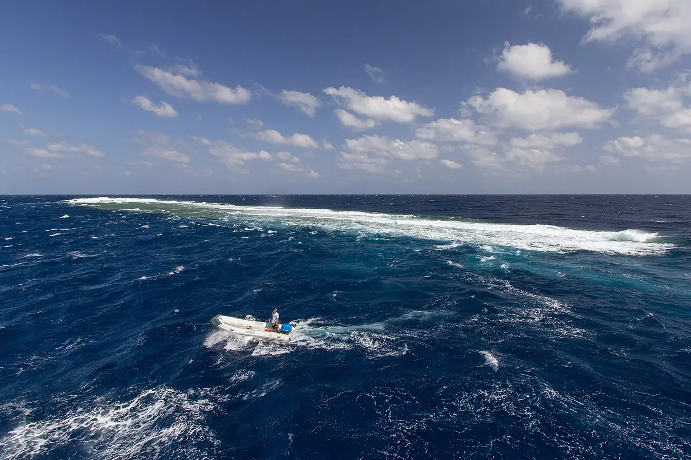

Elphinstone Reef
Marsa Alam, Égypte · plongée

Récif allongé au large de Marsa Alam, avec des tombants couverts de coraux mous et des plateaux profonds à ses extrémités. Il est réputé pour les requins océaniques, surtout en fin d’année.
- Lieu
- Marsa Alam, Égypte
- Niveau
- Expert
- Activités
- plongée
- Type d'eau
- Mer / océan
- Coordonnées
- 25.31, 34.86 (position approximative du secteur)
Dangers à connaître
- Courant et houle fréquents, sites profonds.
- Requins océaniques curieux : reste groupé et évite de rester en surface.
Le conseil d'Ocean Buddy
Plonge avec un centre de Marsa Alam et suis strictement le briefing : les mises à l’eau se font souvent en zodiac à cause du courant.
Ouvrir dans Ocean Buddy Télécharger sur l'App Store
Source : Fiche Ocean Buddy · septembre 2026 · à vérifier localement.